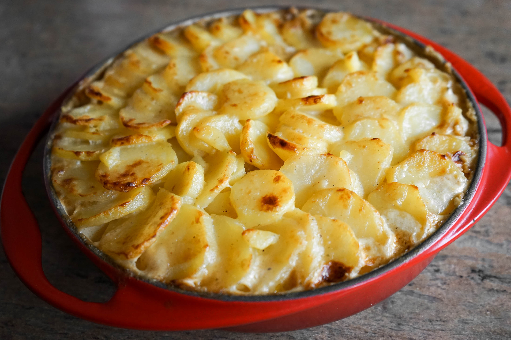

<ion-view view-title="Gratin Dauphinois">

    <ion-content class="padding">


        <h1>Gratin Dauphinois</h1>

        

        <p class="gras">Temps de préparation : 25 minutes</p>

        <p class="gras">Temps de cuisson : 60 minutes</p>

        <p class="gras">Ingrédients (pour 6 personnes) :</p>

        <ul>
            <li>- 1 kg 1/2 de pommes de terre</li>
            <li>- Quelques g d'ail réduit en poudre</li>
            <li>- 30 cl de crème</li>
            <li>- Sel, poivre et muscade</li>
            <li>- 100 g de beurre</li>
            <li>- 1 l de lait</li>

        </ul><br>

        <p class="gras">Préparation de la recette :</p>

        <p>Eplucher, laver et couper les pommes de terre en rondelles fines. NB : ne pas les laver APRES les avoir coupées, car l'amidon est nécessaire à une consistance correcte !</p>

        <p>Mettre dans une casserole le lait, l'ail, le sel, le poivre et la muscade. Porter à ébullition et y plonger les pommes de terre et laisser cuire 10 à 15 mn, selon leur fermeté.</p>

        <p>Placer les pommes de terre dans un plat beurré, recouvrir de crème, puis disposer des petites noix de beurre.</p>

        <p>Cuire à four doux (thermostat 6) pendant 50 mn à 1 heure.</p>

    </ion-content>

</ion-view>